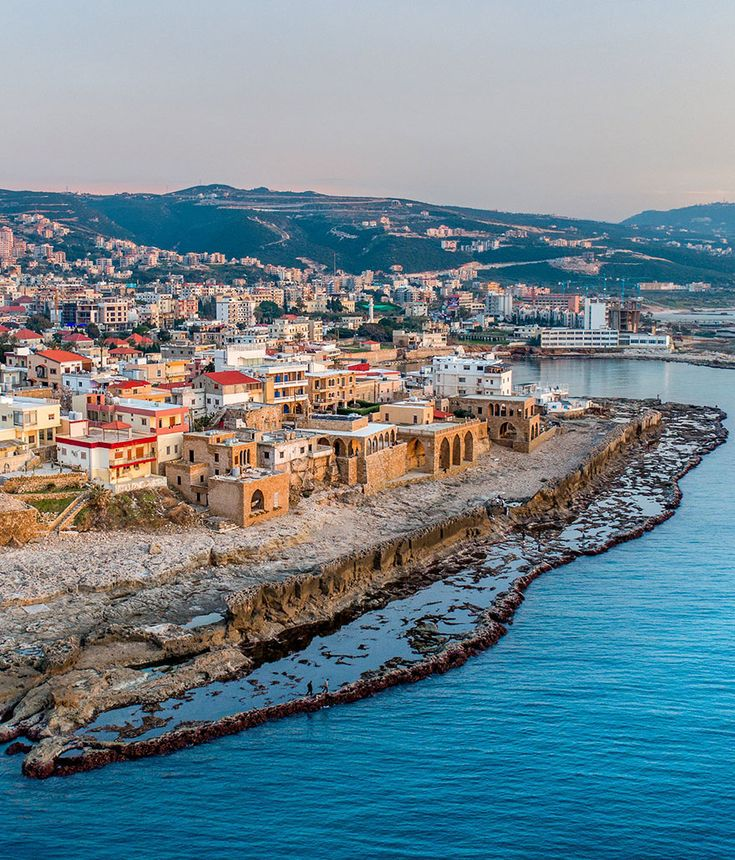
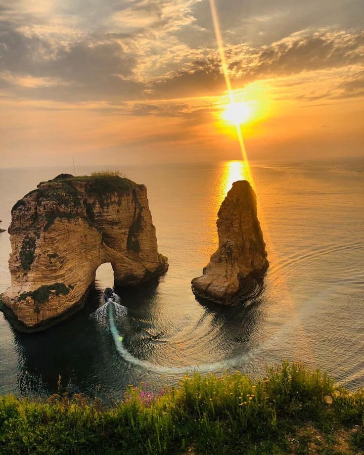

About Lebanon
Lebanon, country consisting of a narrow strip of territory on the eastern shore of the Mediterranean Sea. It is one of the world’s smaller sovereign states. The capital is Beirut.
Though Lebanon, particularly its coastal region, was the site of some of the oldest human settlements in the world—the Phoenician ports of Tyre (modern Ṣūr), Sidon (Ṣaydā), and Byblos (Jubayl) were dominant centers of trade and culture in the 3rd millennium bce—it was not until 1920 that the contemporary state came into being. In that year France, which was administering Lebanon as a League of Nations mandate, established the state of Greater Lebanon. Lebanon then became a republic in 1926 and proclaimed its independence in 1943.

Lebanese Culture
Lebanon shares many of the cultural characteristics of the Arab world, yet it has attributes that differentiate it from many of its Arab neighbors. Its rugged, mountainous terrain has served throughout history as an asylum for diverse religious and ethnic groups and for political dissidents. Lebanon is one of the most densely populated countries in the Mediterranean area and has a high rate of literacy. Notwithstanding its meager natural resources, Lebanon long managed to serve as a busy commercial and cultural center for the Middle East.

Climate of Lebanon
There are sharp local contrasts in the country’s climatic conditions. Lebanon is included in the Mediterranean climatic region, which extends westward to the Atlantic Ocean. Winter storms formed over the ocean move eastward through the Mediterranean, bringing precipitation at that season; in summer, however, the Mediterranean receives little or no precipitation. The climate of Lebanon is generally subtropical and is characterized by hot, dry summers and mild, humid winters. Mean daily maximum temperatures range from the low 90s F (low 30s C) in July to the low 60s F (mid-10s C) on the coast and low 50s F (low 10s C) in Bekaa in January. Mean minimum temperatures in January are in the low 50s F on the coast and the mid-30s F (about 2 °C) in Bekaa. At 5,000 feet (1,524 meters), the elevation of the highest settlements, these are reduced by about 15 °F (8 °C).